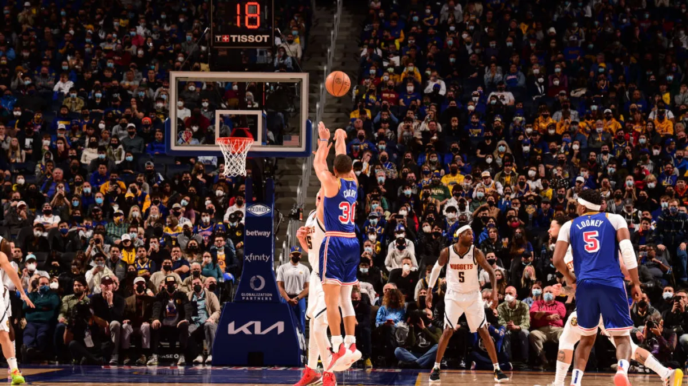
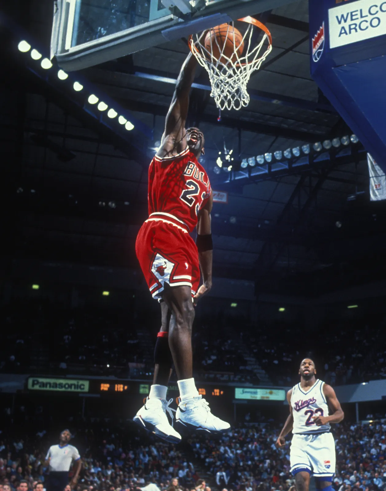

take the shot
You Miss 100% of the shots you dont take.

There is no success without failure
He has missed more than 9000 shots in his career
Lost 300 games. Missed the winning shot 26 times.
He has failed over & over again, which led to his success

If you are scared to fail, you WILL fail
Kobe Bryant's story wasn't easy. He failed countless times
He failed & failed & failed...
He believed in himself & truly dedicated him to the game
The courage to get up after failing is what made him successful
<
The point of this website was to remind you that it's not the end of the world if you fail once, or twice or thrice.
It's about gaining the courage, getting back up & trying again!
You will face countless setbacks , problems , frustration but that's Life
So no matter what, NEVER GIVE UP & be consistent.